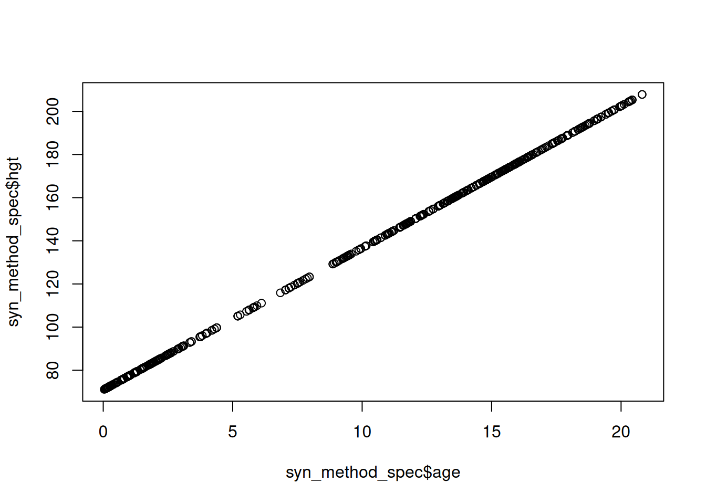

install.packages("synthpop")
install.packages("densityratio")
install.packages("mvtnorm")Generating Synthetic Data in R Using synthpop
Now that we understand the concept of synthetic data and know about the dangers and potential, it is time to actually generate synthetic data in R. Throughout, we will use the synthpop package (Nowok et al. 2016), which is a powerful tool explicitly designed to generate synthetic data. Other alternatives to create synthetic data are, for example, the R-package mice (van Buuren and Groothuis-Oudshoorn 2011; Volker and Vink 2021) or the stand-alone software IVEware (Raghunathan et al. 2002). Additionally, we will use the package densityratio (Volker et al. 2024) to evaluate the utility of synthetic data.
Make sure to load all of the required packages, and in case you haven’t installed them already, install them first:
1. Load the R-packages synthpop and densityratio using library().
TipShow solution
library(synthpop)
library(densityratio)Data
Throughout the practical, we will continue with the boys data from the mice package that we also used in the previous section. Note that you cannot simply load the data from the mice package, because the missing values are imputed to simplify the practical. You can download the data as follows:
The boys data contains measurements on 9 variables on 748 Dutch boys. The variables in the data are described in the block below.
TipDescription of the
boys data
-
age: Decimal age (0-21 years) -
hgt: Height (cm) -
wgt: Weight (kg) -
bmi: Body mass index -
hc: Head circumference (cm) -
gen: Genital Tanner stage (G1-G5) -
phb: Pubic hair (Tanner P1-P6) -
tv: Testicular volume (ml) -
reg: Region (north, east, west, south, city)
Getting to know the data
Normally, this step would be redundant, as you probably analyzed the data of interest already and know all the ins and outs. However, if the boys data is new for you, it is helpful to invest some time in getting to know the data you will be working with. When creating synthetic data, it eases the modelling procedure when you know what variables there are in the data, and which kinds of relationships you can expect.
2. Inspect the first few rows of the data using head().
TipShow solution
head(data) age hgt wgt bmi hc gen phb tv reg
1 0.035 50.1 3.650 14.54 33.7 G2 P3 2 south
2 0.038 53.5 3.370 11.77 35.0 G2 P3 2 south
3 0.057 50.0 3.140 12.56 35.2 G2 P3 2 south
4 0.060 54.5 4.270 14.37 36.7 G2 P1 1 south
5 0.062 57.5 5.030 15.21 37.3 G1 P2 2 south
6 0.068 55.5 4.655 15.11 37.0 G2 P2 1 south3. Use the summary() function to get an overview of the data.
TipShow solution
summary(data) age hgt wgt bmi
Min. : 0.035 Min. : 50.0 Min. : 3.14 Min. :11.77
1st Qu.: 1.581 1st Qu.: 84.0 1st Qu.: 11.70 1st Qu.:15.89
Median :10.505 Median :145.8 Median : 34.65 Median :17.44
Mean : 9.159 Mean :131.1 Mean : 37.18 Mean :18.07
3rd Qu.:15.267 3rd Qu.:174.8 3rd Qu.: 59.58 3rd Qu.:19.50
Max. :21.177 Max. :198.0 Max. :117.40 Max. :38.64
hc gen phb tv reg
Min. :33.70 G1:281 P1:319 Min. : 1.000 north: 81
1st Qu.:48.27 G2:170 P2:119 1st Qu.: 2.000 east :161
Median :53.20 G3: 52 P3: 56 Median : 3.000 west :240
Mean :51.63 G4: 85 P4: 62 Mean : 8.471 south:193
3rd Qu.:56.00 G5:160 P5:103 3rd Qu.:15.000 city : 73
Max. :65.00 P6: 89 Max. :25.000 You may notice a couple of things. First, the data seems to be sorted by age. You may verify this by running !is.unsorted(data$age). Second, you may notice that most variables are non-negative, which might be something you want to take into account when modelling the data (but perhaps, this is not so relevant for the analysis at hand; for now, we assume it is). Third, you may notice that the variable bmi is mathematically linked to the variables hgt and wgt. We want to take this into account when modelling the data. Finally, note that the data consist of a mix of continuous and categorical variables.
Creating synthetic data
Throughout the tutorial, we create data using fully conditional specification, which is implemented in the synthpop package. The most important function in the package is syn(). The syn() function takes a dataset, estimates a set of conditional models, and draws synthetic data from these models. The other arguments allow to specify various modelling choices, for example which model to use for which variable, which set of predictor variables to use for modelling each synthetic variable, whether there are particular constraints that need to be taken into account, and so on.
CautionModelling choices in synthpop
Some of the most important arguments of the syn() function are the following (you can use ?synthpop::syn() for a more exhaustive list). The syn() function will take these modelling choices into account when modelling each synthetic variable, and the resulting synthetic data, called syn in the output list, adheres to these specifications.
method
Either a single character string with a synthesis model that is applied to all variables, or a character vector with a synthesis model per variable. The default method is use classification and regression trees (cart) for all variables, which is a flexible, non-parametric technique for modelling synthetic data (for an introduction on classification and regression trees, see, for instance, Section 8.1 in James et al. 2023). Other synthesis models that are available are listed below (for a more thorough explanation, see ?synthpop::syn.METHOD, with METHOD replaced by the actual method as specified below).
Methods for continuous variables
-
bag: bagging. -
cart: classification and regression trees. -
norm: linear regression. -
sqrtnorm: linear regression on the square root of the outcome variable. -
cubertnorm: linear regression on the cubic root of the outcome variable. -
lognorm: linear regression on the natural logarithm of the outcome.variable. -
normrank: linear regression on normal quantiles of the ranks of the outcome, new values are drawn by matching synthetic ranks with observed ranks, and drawing synthetic values corresponding to the observed ranks. -
pmm: predictive mean matching. -
ranger: random forests using therangerpackage. -
rf: random forests using therandomForestpackage. -
sample: random sampling with replacement from the observed data.
Methods for categorical data
-
satcat: Generates a variable from all possible combination of its predictors using sampling (so only combinations with observed values can be synthesized). -
catall: Extendssatcat, by drawing generating all categorical variables simultaneously from a multinomial distribution. This allows to generate synthetic values for combinations of cells that are not in the observed data, and to specify structural zeros (i.e., combinations of cells that are impossible). The multinomial model is actually a joint model for the categorical variables. The continuous variables can then be modelled using the fully conditional specification approach (this only works when first using joint modelling, and then modelling the remainder using fully conditional specification). -
ipf: Iterative proportional fitting with additional noise to yield better privacy guarantees (satisfies differential privacy, for a non-technical introduction on this, see Desfontaines 2023). -
logreg: logistic regression. -
polr: ordered polytomous regression (logistic regression with an outcome with \(> 2\) categories). -
polyreg: unordered polytomous regression. -
nested: synthesizes a variable that is nested in the categories of another variable. -
cartpmm,ranger,rfandsampleare all also available for categorical variables.
Methods for survival data
-
survctree: generates synthetic survival data using classification and regression trees.
default.method
A string of length four with a user-specified default method for (1) continuous variables, (2) categorical variables with 2 levels, (3) ordered categorical variables with more than 2 levels, and (4) unordered categorical variables with more than 2 levels. Note that this default.method is only used when method = "parametric", or when there is a mismatch between the synthesis method and the variable type.
visit.sequence
Determines the order in which the variables are synthesized. While in theory this order is not supposed to matter much, in practice it can make a difference in some cases. Raab et al. (2017) state that if there exist a subset of variables which relationships are most important, it is often beneficial to synthesize these first. Variables with many categories are typically hard to synthesize, and may yield an unfeasible number of parameters for models of later synthesized variables, so you might consider synthesizing these at the final stages.
predictor.matrix
You might want to exclude some variables as predictor for subsequent variables. This can be helpful if you know there are no relationships between some of the variables, or if you want to include an ID variable in the synthetic data, but not use this as a predictor of subsequent variables.
k
The number of synthetic records that will be generated. You can generate more or less observations than in the observed data, but note that the information in the synthetic samples cannot exceed the information in the observed data.
rules and rvalues
The rules argument expects a named list that contains rules for restricted values. These restricted values are determined by values of other variables: for example, monthly income should be zero for children who are too young to have a paid job (in the Netherlands, the age limit is 12 years). The rvalues argument expects a named list, but with the values to attach to those observations who adhere to the rules specified in rules. So, if you want to specify that every boy with genital tanner stage “G1” has pubic hair tanner stage “P1”, you can set
rules = list(phb = "gen == 'G1'")
rvalues = list(phb = 1)semicont
Some variables might have a point mass for some values. For example, income variables often have a spike at 0 for people who don’t have a paid job. This point mass can be modelled separately by first predicting whether an observation has either a zero or non-zero value, and subsequently modelling the income values for those observations with a non-zero value.
smoothing
Some imputation methods for continuous variables sample the synthetic values from the observed variable. Since re-using observed values may worsen privacy risks, smoothing can be applied such that there is additional randomness in the values that end up in the synthetic data. The smoothing argument expects a character string with the smoothing method per variable.
We will first create synthetic data with a relatively simple, parametric, synthesis model. To this end, we need to decide on a parametric model to synthesize each variable, which can be done by specifying method = "parametric" in the call to syn(). The "parametric" method in synthpop uses the "normrank" method for continuous variables. This method synthesizes continuous variables with an extension of a linear regression model that preserves the marginal distribution of the variables under deviations from normality. That is, skewness or other deviations are preserved along with linear relationships with other variables, without requiring complex modelling. Specifically, normrank first transforms the observed data to standard normal quantiles based on the relative ranks of the values. Subsequently, a linear regression model is fitted on these quantiles using all predictors that were synthesized previously. Finally, synthetic values are drawn from the observed data by backtransforming the synthetic quantiles to ranks, and matching the ranks with the observed data. This approach better approximates the marginal (univariate) distribution of the observed data in case of non-normality, but distorts linear relationships between variables. For this reason, we set the default parametric method to "norm" in the script below.
When the data is not numerical, synthpop treats it as a categorical variable. Categorical variables with two categories are synthesized with a logistic regression model and categorical variables with more than two categories are synthesized using ordered or unordered polytomous regression (which is an extension to logistic regression for more than two categories), depending on whether the categories are ordered or not, respectively.
4. Use synthpop() to create a synthetic data set in an object called syn_param using method = "parametric", but set default.method = c("norm", "logreg", "polyreg", "polr"). Use seed = 123 if you want to replicate our results.
TipShow solution
5. Inspect the syn_param object, what do you see?
TipShow solution
syn_paramCall:
($call) syn(data = data, method = "parametric", default.method = c("norm",
"logreg", "polyreg", "polr"), print.flag = FALSE, seed = 123)
Number of synthesised data sets:
($m) 1
First rows of synthesised data set:
($syn)
age hgt wgt bmi hc gen phb tv reg
1 11.709 145.13206 42.3624667 19.94070 54.64014 G1 P2 7 city
2 13.300 153.50055 54.0110039 20.86808 55.49450 G4 P4 11 east
3 1.514 79.63542 2.0780476 13.72384 44.56829 G1 P1 2 west
4 14.666 168.75302 71.5556592 24.23906 59.51492 G4 P4 15 city
5 1.790 83.71283 -0.5525224 12.95750 46.64142 G1 P1 4 east
6 0.796 64.51486 18.1933171 20.34920 43.65321 G2 P2 3 east
...
Synthesising methods:
($method)
age hgt wgt bmi hc gen phb tv
"sample" "norm" "norm" "norm" "norm" "polr" "polr" "norm"
reg
"polyreg"
Order of synthesis:
($visit.sequence)
age hgt wgt bmi hc gen phb tv reg
1 2 3 4 5 6 7 8 9
Matrix of predictors:
($predictor.matrix)
age hgt wgt bmi hc gen phb tv reg
age 0 0 0 0 0 0 0 0 0
hgt 1 0 0 0 0 0 0 0 0
wgt 1 1 0 0 0 0 0 0 0
bmi 1 1 1 0 0 0 0 0 0
hc 1 1 1 1 0 0 0 0 0
gen 1 1 1 1 1 0 0 0 0
phb 1 1 1 1 1 1 0 0 0
tv 1 1 1 1 1 1 1 0 0
reg 1 1 1 1 1 1 1 1 0Calling syn_param shows you some important features of the synthesis procedure. First, it shows the number of synthetic data sets that were generated (in syn_param$m). Also, it shows for every variable the method that was used to synthesize the data (in syn_param$method). If you want to know more about a specific synthesis method, say, for example, logreg, you can call ?syn.logreg to get more information.
Because we assumed that the synthetic variables are drawn from a normal distribution, there might be values outside the typical range. For example, the fifth value for the variable wgt is negative, which is impossible. One way to deal with this is reverting back to the "normrank" method. Another approach is to use another transformation, or using another model (which we will do later in this tutorial). Another problem that you might notice, is that the variable bmi is not equal to wgt / (hgt/100)^2. This issue can be fixed using passive synthesis, which will be demonstrated in the next section.
Specifying custom synthesis models
In synthpop, the synthesis method can be altered using the method argument. The method-vector is a vector that contains, for every variable, the imputation method or passive imputation equation with which this variable should be imputed. We can obtain the method-vector that we previously specified implicitly by extracting it from the syn_param object.
method <- syn_param$method
method age hgt wgt bmi hc gen phb tv
"sample" "norm" "norm" "norm" "norm" "polr" "polr" "norm"
reg
"polyreg" We can alter the synthesis model for any variable by changing the corresponding element in this vector. For passive imputation, we can define a function using ~I(equation). For bmi, this entails the following.
method["bmi"] <- "~I(wgt/(hgt/100)^2)"
method age hgt wgt
"sample" "norm" "norm"
bmi hc gen
"~I(wgt/(hgt/100)^2)" "norm" "polr"
phb tv reg
"polr" "norm" "polyreg" With this specification, synthpop knows that it should not use an statistical model, but rather use the synthetic hgt and wgt values to construct the bmi values deterministically. Note that, when specifying passive synthesis models, it is essential that these variables are synthesized after the other variables, because otherwise the equation cannot be applied. Moreover, it can improve utility to perform passive synthesis after imputing all other variables. Specifically, if some relationships between the variables are not captured adequately before passive synthesis is applied, relationships with variables synthesized later may also be distorted. This can be taken into account by specifying the visit.sequence argument, which defines the sequence in which variables are synthesized.
visit <- c("age", "hgt", "wgt", "hc", "gen", "phb", "tv", "reg", "bmi")6. Use synthpop() to create a synthetic data set in an object called syn_passive using the adjusted method vector and visit.sequence. Again, use seed = 123 if you want to replicate our results. Inspect the output.
TipShow solution
syn_passive <- syn(
data = data,
method = method,
visit.sequence = visit,
seed = 123,
print = FALSE
)
Variable(s) bmi with passive synthesis: relationship does not hold in data.
Total of 723 case(s) where predictors do not give value present in data.
You might want to recompute the variable(s) in the original data.The printed message signals that synthpop detects that the specified relationship does not hold in the real data. This is not really something to worry about: it is due to rounding errors in bmi.
syn_passiveCall:
($call) syn(data = data, method = method, visit.sequence = visit, print.flag = FALSE,
seed = 123)
Number of synthesised data sets:
($m) 1
First rows of synthesised data set:
($syn)
age hgt wgt bmi hc gen phb tv reg
1 11.709 145.13206 42.3624667 20.1119664 56.73930 G2 P2 2 city
2 13.300 153.50055 54.0110039 22.9225209 55.08469 G2 P2 7 south
3 1.514 79.63542 2.0780476 3.2767471 45.40543 G1 P1 4 east
4 14.666 168.75302 71.5556592 25.1270127 57.41566 G5 P6 26 west
5 1.790 83.71283 -0.5525224 -0.7884349 46.63455 G1 P1 0 west
6 0.796 64.51486 18.1933171 43.7111649 44.63115 G2 P1 9 south
...
Synthesising methods:
($method)
age hgt wgt
"sample" "norm" "norm"
bmi hc gen
"~I(wgt/(hgt/100)^2)" "norm" "polr"
phb tv reg
"polr" "norm" "polyreg"
Order of synthesis:
($visit.sequence)
age hgt wgt hc gen phb tv reg bmi
1 2 3 5 6 7 8 9 4
Matrix of predictors:
($predictor.matrix)
age hgt wgt bmi hc gen phb tv reg
age 0 0 0 0 0 0 0 0 0
hgt 1 0 0 0 0 0 0 0 0
wgt 1 1 0 0 0 0 0 0 0
bmi 1 1 1 0 1 1 1 1 1
hc 1 1 1 0 0 0 0 0 0
gen 1 1 1 0 1 0 0 0 0
phb 1 1 1 0 1 1 0 0 0
tv 1 1 1 0 1 1 1 0 0
reg 1 1 1 0 1 1 1 1 0The bmi values correspond to the synthetic hgt and wgt values, as we wanted. Using this approach, you can also specify different synthesis methods in general, for example to synthesize some of the variables with a random forest model, or to transform some of the variables before synthesizing them. There are too many possibilities to cover in this practical, but the synthpop package contains extensive documentation (see, for instance, ?synthpop::syn and vignette("synthpop", "synthpop")).
Advanced and optional: Extensions to synthpop
When the default synthetic data generation methods in
synthpopare not sufficient for your purposes, it is possible to write extensions. This can become fairly advanced, and is usually not required. Nevertheless, extendingsynthpopcan be done, and below it is shown how for those interested. This section is optional and can be skipped safely.
Synthpop comes with an extensive suite of functionality for generating synthetic data, that already allow for a wide range of applications. It can, however, occur that you want models that are not yet incorporated. In synthpop, it is possible to write custom synthesis functions that extend the existing suite of methods. The core of writing new functionality, is that you take observed data as input, train a model on this input, and generate new data from this model. In particular, new imputation functions take as input the observed data, in the form of predictors x and outcome y (this is the variable to be synthesized), and a set of synthetic predictors xp that is used to generate the new synthetic outcome values values. Additionally, we may use additional arguments to specify parameters for the model used to create synthetic data.
In practice, we can thus write a synthesis function that starts with syn. and then the name of the function, with arguments y (outcome variable to be synthesized), x (predictors used to model this outcome), xp (the synthetic predictor variables used to generate the synthetic y) and potentially additional parameters for the model at hand. Subsequently, we need to fit the model on the observed data, x and y, and from this model draw new observations from the synthetic predictors, xp. This is illustrated below with a regression model, where all synthetic values lie exactly on the regression line. Usually, you don’t want all values to lie on the regression line, because the variability around the predicted values is essential in making realistic synthetic data, but we stick to this example simply to illustrate the procedure. The output of the synthetic data function should be a list with two arguments.
-
res: contains the synthetic values, the main output of the synthesis model. -
fit(optional): the parameters of the fitted model, this allows users to generate new synthetic data based on the already fitted models.
The naming is important, because to extract the synthetic values and allocate them at the correct location, synthpop internally looks for the res object, and will not be able to extract the synthetic values if you chance the names. Also note that when returning model parameters (through the fit argument), you only return parameters of the fitted model, and not the entire model object, which often includes the data itself.
syn.synthesis_function <- function(y, x, xp, ...) {
new_y <- as.matrix(y) # variable to be synthesized
new_x <- as.matrix(x) # observed predictor variables
new_xp <- cbind(1, as.matrix(xp)) # previously synthesized variables
fit <- lm(new_y ~ new_x) # fitted model
return(
list(
res = new_xp %*% coef(fit), # synthetic values
fit = coef(fit)
)
)
}
method["hgt"] <- "synthesis_function"
syn_method_spec <- syn(
data = data,
method = method,
seed = 123,
print = FALSE
)$syn
Variable(s) bmi with passive synthesis: relationship does not hold in data.
Total of 723 case(s) where predictors do not give value present in data.
You might want to recompute the variable(s) in the original data.plot(syn_method_spec$age, syn_method_spec$hgt)
The figure shows that the synthetic bmi values are indeed a linear function of the synthetic age values, as we specified. The procedure can be altered by using a different synthesis model. Usually, you at least want to use a synthesis model that incorporates some noise in the synthetic values, which can be incorporated by drawing new residuals around the predicted values. In our case, we could draw new residuals from a normal distribution, by setting res = new_xp %*% coef(fit) + rnorm(new_xp, 0, sd(fit$residuals)). In other settings, noise is incorporated more implicitly, for example by drawing new labels from a binomial distribution, where the predicted probabilities are used as input, or by sampling from terminal leaves, as the cart models do. If you want to learn how this happens in practice, it is probably easiest to checkout the underlying code of some synthesis methods in synthpop, by typing synthpop:::syn.cart or synthpop:::syn.norm, or any other method.
Using this procedure, you can combine modelling functions that are self-written or stem from alternative packages with the synthesis procedure in synthpop. This also allows to model, for example, a hierarchical structure, using the R-package lme4 (Bates et al. 2015), glmmTMB (Brooks et al. 2017) or, if you prefer a Bayesian procedure, with brms (Bürkner 2017). In such instances, one can incorporate the hierarchical structure replacing the single level models with their hierarchical counterparts from these packages. Since, as far as we are aware of, no one has done this for synthetic data yet, relevant resources do not seem to to be widely documented yet, but feel free to reach out if you plan on doing this. To read more about modelling hierarchical data in the context of imputation for missing data, see Yucel et al. (2017); Speidel et al. (2020)].
Conclusion
The exercises here showed that synthpop allows quite some flexibility when modelling synthetic data, and simplifies the process substantially. However, further refinements might sometimes be possible. In the subsequent section, we will discuss how to evaluate the quality of the synthetic data at hand, from both a privacy and utility perspective.
TipSummary
- Synthetic data can be generated in
Rusing thesynthpoppackage, which implements fully conditional specification (FCS). - The core
syn()function sequentially fits conditional synthesis models for each variable, and draws synthetic values from these models. - Different synthesis models can be specified on a per-variable basis, allowing to distinguish between continuous, categorical and survival data and to use different functional forms per variable.
- Synthesis order, predictors and constraints can be controlled to improve realism and preserve important relationships.
- Passive synthesis allows for incorporating deterministic relationships in the synthetic data.
-
synthpopcan be extended with custom synthesis models by writing tailored synthesis functions.
References
Bates, Douglas, Martin Mächler, Ben Bolker, and Steve Walker. 2015. “Fitting Linear Mixed-Effects Models Using lme4.” Journal of Statistical Software 67 (1): 1–48. https://doi.org/10.18637/jss.v067.i01.
Brooks, Mollie E., Kasper Kristensen, Koen J. van Benthem, et al. 2017. “glmmTMB Balances Speed and Flexibility Among Packages for Zero-Inflated Generalized Linear Mixed Modeling.” The R Journal 9 (2): 378–400. https://doi.org/10.32614/RJ-2017-066.
Bürkner, Paul-Christian. 2017. “brms: An R Package for Bayesian Multilevel Models Using Stan.” Journal of Statistical Software 80 (1): 1–28. https://doi.org/10.18637/jss.v080.i01.
Desfontaines, Damien. 2023. A Friendly, Non-Technical Introduction to Differential Privacy. https://desfontain.es/blog/friendly-intro-to-differential-privacy.html.
James, Gareth, Daniela Witten, Trevor Hastie, and Robert Tibshirani. 2023. An Introduction to Statistical Learning. 2nd ed. Springer Texts in Statistics. Springer. https://doi.org/10.1007/978-1-0716-1418-1.
Nowok, Beata, Gillian M. Raab, and Chris Dibben. 2016. “synthpop: Bespoke Creation of Synthetic Data in R.” Journal of Statistical Software 74 (11): 1–26. https://doi.org/10.18637/jss.v074.i11.
Raab, Gillian M., Beata Nowok, and Chris Dibben. 2017. Guidelines for Producing Useful Synthetic Data. https://arxiv.org/abs/1712.04078.
Raghunathan, Trivellore E, Peter W Solenberger, and John Van Hoewyk. 2002. “IVEware: Imputation and Variance Estimation Software.” Ann Arbor, MI: Survey Methodology Program, Survey Research Center, Institute for Social Research, University of Michigan.
Speidel, Matthias, Jörg Drechsler, and Shahab Jolani. 2020. “The r Package Hmi: A Convenient Tool for Hierarchical Multiple Imputation and Beyond.” Journal of Statistical Software 95 (9): 1–48. https://doi.org/10.18637/jss.v095.i09.
van Buuren, Stef, and Karin Groothuis-Oudshoorn. 2011. “mice: Multivariate Imputation by Chained Equations in r.” Journal of Statistical Software 45 (3): 1–67. https://doi.org/10.18637/jss.v045.i03.
Volker, Thom Benjamin, Carlos Gonzalez Poses, and Erik-Jan van Kesteren. 2024. Densityratio: Distribution Comparison Through Density Ratio Estimation. Version 0.0.1. https://doi.org/10.5281/zenodo.13881689.
Volker, Thom Benjamin, and Gerko Vink. 2021. “Anonymiced Shareable Data: Using Mice to Create and Analyze Multiply Imputed Synthetic Datasets.” Psych 3 (4): 703–16. https://doi.org/10.3390/psych3040045.
Yucel, Recai M, Enxu Zhao, Nathaniel Schenker, and Trivellore E Raghunathan. 2017. “Sequential Hierarchical Regression Imputation.” Journal of Survey Statistics and Methodology 6 (1): 1–22. https://doi.org/10.1093/jssam/smx004.